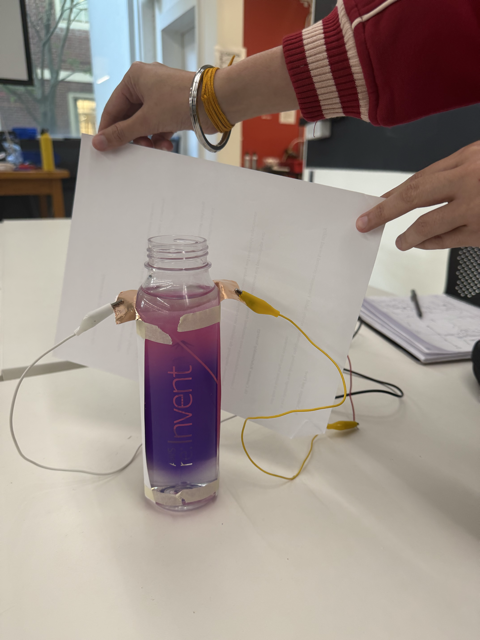
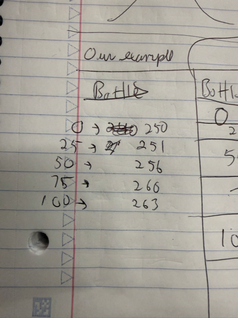
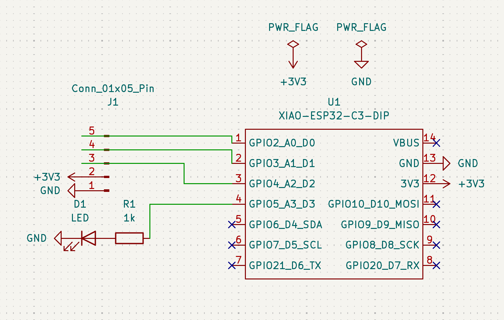
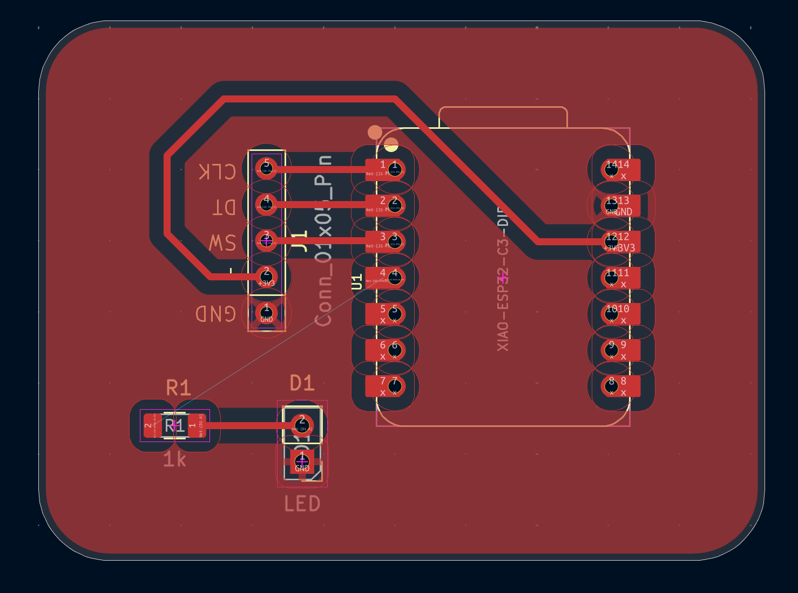
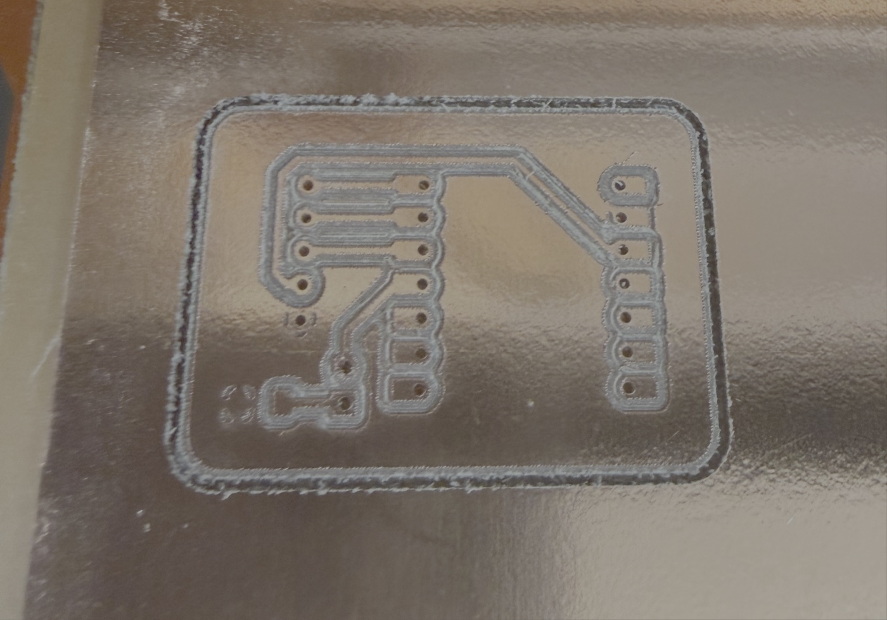
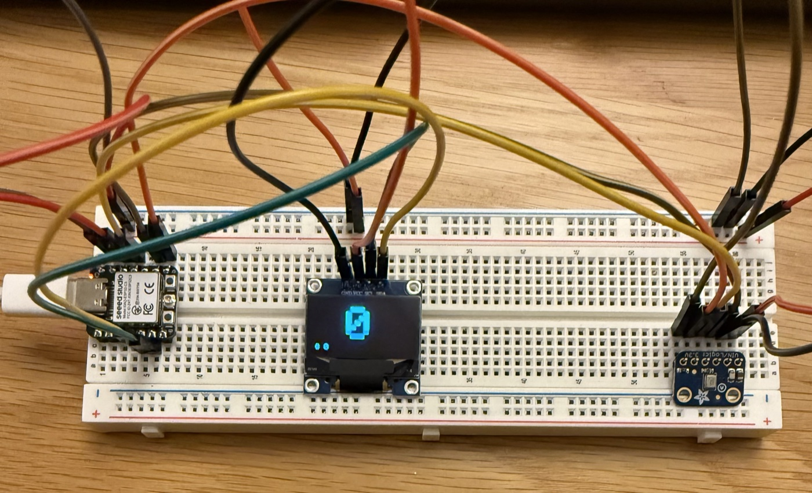
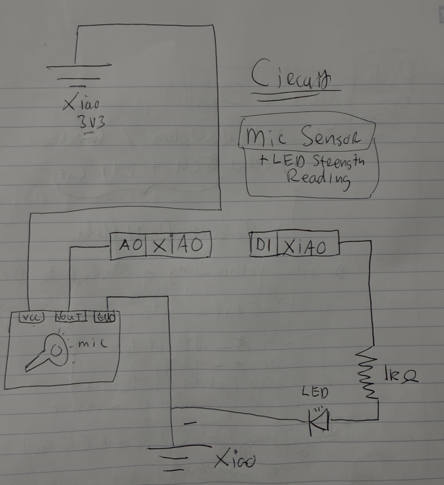

You have two assignments: create and calibrate a capacitive sensor and then use and calibrate another sensor.


We designed a simple water level sensor that roughly positively correlated its outputs with the water level:
Capacitance reading vs. water level, from the log above



This board just takes a XIAO ESP32, a resistor, and an LED. It's a through-hole design, so you push components through the back and solder them on the front copper. The most interesting thing about this design is that the entire front face acts as ground!
This weekend we learned how to use KiCad in Victor's workshop to design printed circuit boards. Basically you define components as symbols, import and connect them into a circuit in the schematic to create footprints, and import the footprints into the PCB (printed circuit board) editor and create traces (like wires) and shape to produce a manufacturable board in the PCB editor.
After that we used some tool from an MIT student (gerber2img) to take our design files and translate them into inputs for the CNC machine. We actually printed one of our boards!
There are two files, one for the circuit board, and one for the drill holes.
Inputs to gerber2img
Outputs from gerber2img, into the CNC

This mic sensor uses an OLED (Adafruit SSD1306) and a digital mic (Adafruit 3421) to show a loudness level and raw sample outputs.
#include <Wire.h>
#include <Adafruit_GFX.h>
#include <Adafruit_SSD1306.h>
#include <driver/i2s.h>
#define SCREEN_WIDTH 128
#define SCREEN_HEIGHT 64
#define MIC_BCLK D8
#define MIC_LRCL D7
#define MIC_DOUT D10
Adafruit_SSD1306 display(SCREEN_WIDTH, SCREEN_HEIGHT, &Wire, -1);
void initialize_oled();
void initialize_mic();
long read_mic_range();
int get_loudness_level(long range);
void display_loudness(long range, int level);
void setup() {
Serial.begin(9600);
initialize_oled();
initialize_mic();
}
void loop() {
long range = read_mic_range();
int level = get_loudness_level(range);
Serial.println(range);
display_loudness(range, level);
delay(50);
}
void initialize_oled() {
Wire.begin(D4, D5);
if (!display.begin(SSD1306_SWITCHCAPVCC, 0x3C)) {
while (true);
}
display.clearDisplay();
display.setTextColor(SSD1306_WHITE);
display.display();
}
void initialize_mic() {
i2s_config_t config = {
.mode = (i2s_mode_t)(I2S_MODE_MASTER | I2S_MODE_RX),
.sample_rate = 16000,
.bits_per_sample = I2S_BITS_PER_SAMPLE_32BIT,
.channel_format = I2S_CHANNEL_FMT_ONLY_LEFT,
.communication_format = I2S_COMM_FORMAT_STAND_I2S,
.intr_alloc_flags = 0,
.dma_buf_count = 4,
.dma_buf_len = 128,
.use_apll = false,
.tx_desc_auto_clear = false,
.fixed_mclk = 0
};
i2s_pin_config_t pins = {
.bck_io_num = MIC_BCLK,
.ws_io_num = MIC_LRCL,
.data_out_num = I2S_PIN_NO_CHANGE,
.data_in_num = MIC_DOUT
};
i2s_driver_install(I2S_NUM_0, &config, 0, NULL);
i2s_set_pin(I2S_NUM_0, &pins);
}
long read_mic_range() {
int32_t samples[128];
size_t bytes_read = 0;
i2s_read(
I2S_NUM_0,
samples,
sizeof(samples),
&bytes_read,
portMAX_DELAY
);
int sample_count = bytes_read / sizeof(int32_t);
int32_t minimum = INT32_MAX;
int32_t maximum = INT32_MIN;
for (int i = 0; i < sample_count; i++) {
minimum = min(minimum, samples[i]);
maximum = max(maximum, samples[i]);
}
return maximum - minimum;
}
int get_loudness_level(long range) {
if (range > 120000000) return 5;
if (range > 70000000) return 4;
if (range > 30000000) return 3;
if (range > 10000000) return 2;
if (range > 3000000) return 1;
return 0;
}
void display_loudness(long range, int level) {
display.clearDisplay();
display.setTextSize(6);
display.setCursor(42, 6);
display.print(level);
display.setTextSize(1);
display.setCursor(0, 56);
display.print("# ");
display.print(range);
display.display();
}The sketch reads 128 samples at a time and maps the sample range (max − min) to a loudness level shown on the OLED:
| Loudness level | Sample range |
|---|---|
| 1 | 3,000,000 |
| 2 | 10,000,000 |
| 3 | 30,000,000 |
| 4 | 70,000,000 |
| 5 | 120,000,000 |
Sample-range threshold for each loudness level, from get_loudness_level()

This was the original circuit: the goal was to measure microphone input, with a baseline of ambient or no noise, and then blink the light as the volume increases until we reach the max, in which case the blinking stops and the LED is solid.
It has since been upgraded to an OLED to show the real-time input instead.
{kind=link}
{kind=link}